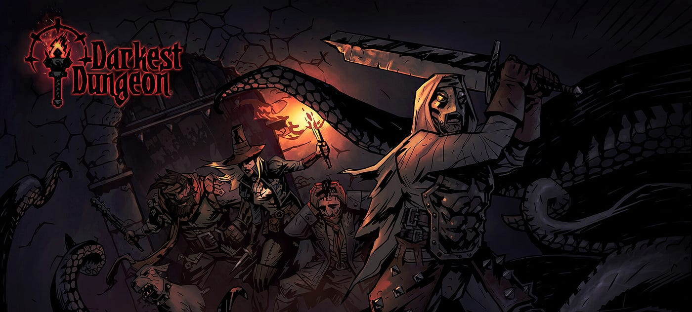

O melhor RPG de turno
Postado 12 de Janeiro de 2024 Darkest Dungeon é um game RPG roguelite desenvolvido e publicado pela Red Hook Studios. Este jogo é a experiência mais próxima de uma mesa de D&D real, tirando Baldur's Gate 3 (óbvio). Mas o que lhe faz se destacar tanto assim? e melhor, por que este jogo é pouco conhecido? Neste artigo, vou tentar responder essas perguntas...
Ler maisIntrodução ao Blog
Postado 12 de Janeiro de 2024
Olá! este Blog foi feito com intuito para que eu melhore minha prática com HTML 5 e CSS 3, posteriormente talvez eu utilize mais linguagens, porém agora, vou falar um pouco mais sobre mim...
Ler mais